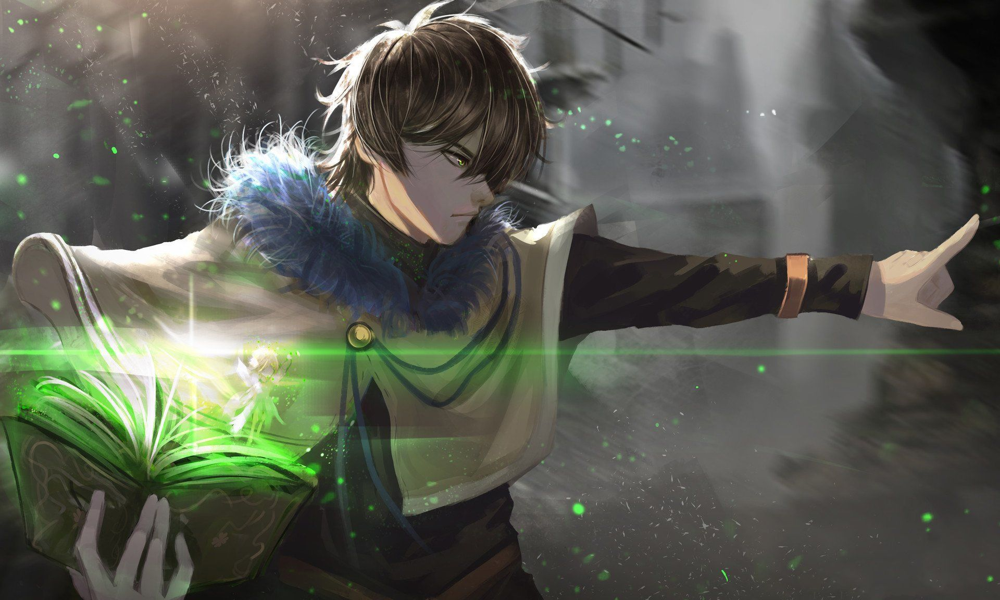
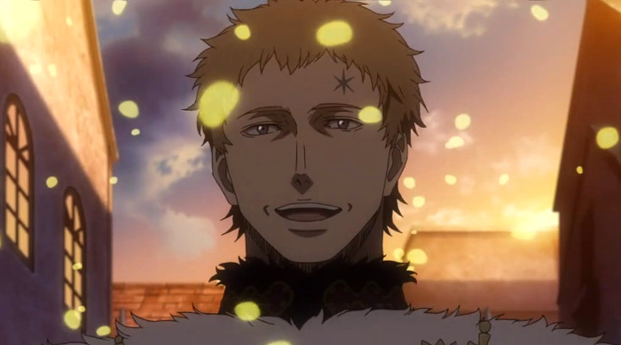
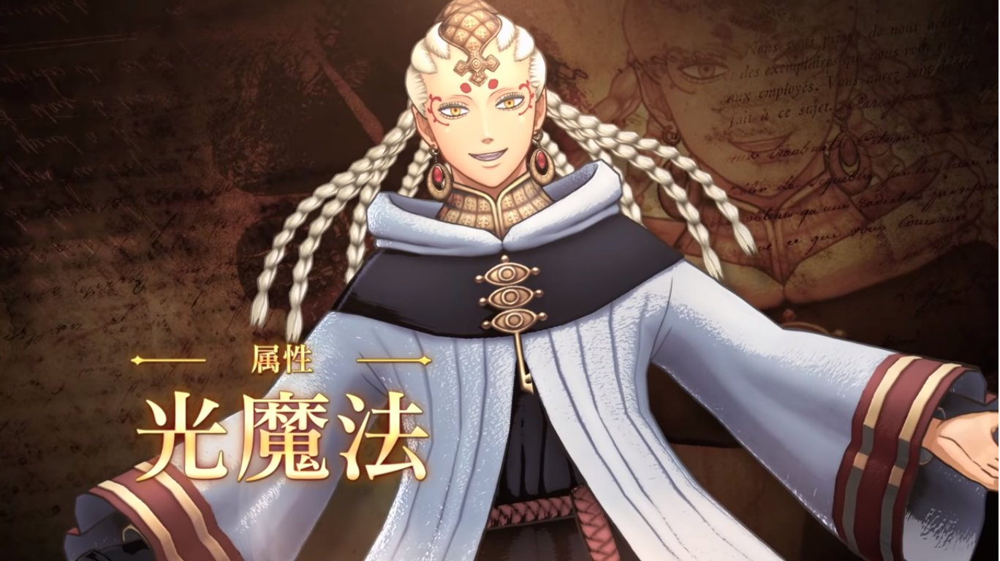

Asta 「アスタ, Asuta」[1] es un huérfano que quedó bajo el cuidado de una iglesia en el pueblo de Hage.[2] Él es el portador de un Grimorio del Trébol de Cinco Hojas[3] y miembro de la orden del Toro Negro[4] y los Caballeros Reales[5] del Reino del Trébol. Él es un Caballero Mágico principiante de tercera clase.[6] Es anfitrión del demonio Liebe. Es el protagonista principal de la serie y su sueño es convertirse en el Rey Mago.
Yuno Grinberryall 「ュノ, Yuno Gurinberiōru-ke」 es un huérfano que quedó bajo el cuidado de una iglesia en el pueblo de Hage. Él es el actual portador del grimorio de cuatro hojas y el actual vice capitan del escuadrón de los Caballeros Mágicos, Amanecer Dorado del Reino del Trébol. Es uno de los protagonistas de la serie y el rival de Asta. Tambien, pertenece a la familia real del Reino de la Pica, la familia Grinbelior.
Julius Novachrono 「ユリウス・ノヴァクロノ, Yuriusu Novakurono」 es el 28º Rey Mago de la Orden de los Caballeros Mágicos del Reino del Trébol. También es el antiguo capitán del escuadrón Ciervo Aguamarino.
Patry 「パトリ, Patolli」 es un elfo reencarnado en el cuerpo de William Vangeance, capitán de Amanecer Dorado. Compartiendo su cuerpo con él y tomando el nombre de Licht lidera el Ojo de la Noche Blanca.
